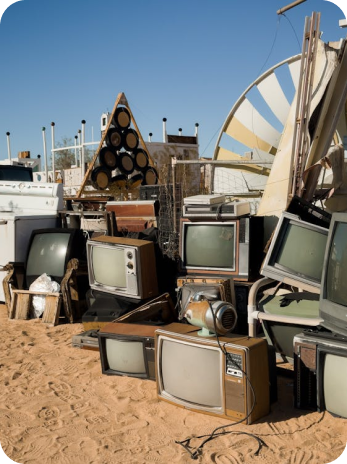
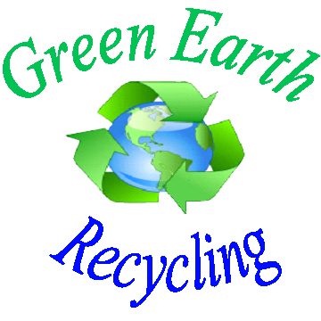

Why You Should Recycle
The typical CRT television contains several toxic materials, including lead, mercury, cadmium, and barium. The glass in these televisions alone contains high amounts of lead, which, when improperly disposed of, can contaminate soil and water sources. These chemicals are not only harmful to the environment but also to human health, causing issues such as respiratory problems, kidney damage, and even cancer when exposure levels are high enough.
One of the greatest concerns surrounding CRT disposal is mercury contamination. Mercury can leak from broken CRT screens and enter the environment, where it accumulates in water bodies. Over time, mercury moves up the food chain through a process known as biomagnification, where larger predators, including humans, consume fish and other organisms that have absorbed mercury. This can lead to serious neurological damage, especially in young children and pregnant women.
Being mass-produced and then mass-disposed of during the digital television switch, this could become a major health threat in the coming decades. Unfortunately, many of these devices end up in landfills or are incinerated, releasing harmful chemicals into the air and water. Addressing the growing e-waste problem starts with recognizing the dangers posed by obsolete devices like CRTs and ensuring they are safely recycled.
Luckily, there are eco-friendly options for disposing of CRTs. Many recycling centers accept old CRT televisions and follow strict guidelines to ensure the toxic components are handled safely. Some centers can even repurpose certain parts of the devices. We have compiled a list of recycling centers in the Carolinas to help you find a convenient location:
- Charlotte Recycling Center: 123 Eco Ave, Charlotte, NC
- Green Earth Recycling: 456 Oak Rd, Columbia, SC
- Blue Ridge Recycling Solutions: 789 Maple St, Asheville, NC